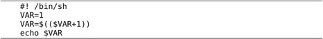
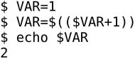

本书最初是为北京亚嵌教育研究中心的嵌入式Linux系统工程师就业班课程量身定做的教材之一。该课程是为期四个月的全日制职业培训，要求学员毕业时具备非常Solid的C编程能力，能熟练地使用Linux系统，同时对计算机体系结构与指令集、操作系统原理和设备驱动程序都有较深入的了解。然而学员入学时的水平是非常初级而且参差不齐的：学历有专科、本科也有研究生，专业有和计算机相关的也有很不相关的（例如会计专业），以前从事的职业有和技术相关的也有完全不相关的（例如HR），年龄从二十出头到三十五六岁的都有。这么多背景完全不同、基础完全不同、思维习惯和理解能力完全不同的人来听同一堂课，大家都迫切希望学会嵌入式开发技术，投身IT行业，这就是职业教育的特点，也是我写作本书时需要考虑的主要问题。
学习编程绝不是一件简单的事，尤其是对于零基础的初学者来说。大学的计算机专业有四年时间从零基础开始培养一个人，微积分、线性代数、随机数学、离散数学、组合数学、自动机、编译原理、操作系统、计算机组成原理等一堆基础课，再加上C/C++、Java、数据库、网络、软件工程、计算机图形学等一堆专业课，最后培养出一个能找到工作的学生。很遗憾这最后一条很多学校没有做好，来亚嵌培训的很多学生这四年就是这么学过来的，但据我们考查他们的基础几乎为零，我不知道为什么。与之形成鲜明对比的是，只给我们四个月的时间，同样要求从零基础开始，最后培养出一个能找到工作的学生，而且还要保证他找到工作，这就是职业教育的特点。
为什么我说“只给我们四个月的时间”？我们倒是想教四年呢，但学时的长短我们做不了主，是由市场规律决定的。四年的任务要求四个月做好，要怎么完成这样一个几乎不可能的任务呢？有些职业教育给出的答案是“实用主义”，打出了“有用就学，没有用就不学”的口号，大肆贬低说大学里教的基础课都是过时的、无用的，只有他们教的技术才是实用的，这种炒作很不好，我认为大学里教的每一门课都是非常有用的，基础知识在任何时候都不会过时，倒是那些时髦的“实用技术”有可能很快就过时了。
四年的任务怎么才能用四个月做好？我们给出的答案是“优化”。现在大学里安排的课程体系最大的缺点就是根本不考虑优化。每个过来人都会有这样的感觉：大一大二学了好多数学课，却不知道都是干什么用的，也不懂为什么要学。连它有什么用都不知道怎么能有兴趣学好呢？然后到大三大四学专业课时，用到以前的知识了，才发现以前学的数学是多么有用，然而早就忘得一干二净了，考完试都还给老师了，回头重新学吧，这时候发现很多东西以前根本没学明白，现在才真的学明白了，那么前两年的时间岂不是都浪费了？大学里的课程体系还有一个缺点就是不灵活，每门课必须占一个学期，必须由一个老师教，不同课程的老师之间没有任何沟通和衔接，其实这些课程之间是相互依赖的，把它们强行拆开是不符合人的认知规律的。比如我刚上大学的时候，大一上半学期就被逼着学C语言，其实C语言是一门很难的编程语言，不懂编译原理、操作系统和计算机体系结构根本不可能学明白，那半个学期自然就浪费掉了。当时几乎所有学校的计算机相关专业都是这样，大一上来就学C语言，有的学校更疯狂，上来就学C++，导致大多数学生都以为自己会C语言，但其实都是半吊子水平，到真正写代码的时候经常为一个Bug搞得焦头烂额，却没有机会再系统地学一遍C语言，因为在学校看来，C语言课早在大一就给你“上完了”，就像一顿饭已经吃完了，不管你吃饱没吃饱，不会再让你重吃一遍了。显而易见，如果要认真地对这些课程做优化，的确是有很多水分可以挤的。
⦁ 本书不是孤立地讲C语言，而是和编译原理、操作系统、计算机体系结构结合起来讲。或者说，本书的内容只是以C语言为载体，真正讲的是计算机的原理和程序的原理。
⦁ 强调基本概念和基本原理，在编排顺序上非常重视概念之间的依赖关系，每次引入一个新的概念，只依赖于前面章节已经讲过的概念，而绝不会依赖后面章节要讲的概念。有些地方为了叙述得完整，也会引用后面要讲的内容，比如说“有关××我们到第×章再仔细讲解”，凡是这种引用都不是必要的依赖，可以当它不存在，只管继续往下看就行了。
⦁ 尽量做到每个知识点直到要用的时候才引入。过早引入一个知识点，讲完了又不用它，读者很快就会遗忘，这是不符合认知规律的。
这是一本从零基础开始学习编程的书，不要求读者有任何编程经验，但读者至少需要具备以下素质：
⦁ 熟悉Linux系统的基本操作。如果不具备这一点，请先参考其他教材学习Linux系统的基本操作，熟练之后再学习本书，《鸟哥的Linux私房菜》据说是Linux系统管理和应用方面比较好的一本书。但学习本书并不需要会很多系统管理技术，只要会用基本命令，会自己安装系统和软件包就足够了。
⦁ 具有高中毕业的数学水平。本书会用到高中的数学知识。事实上，如果不具有高中毕业的数学水平，也不必考虑做程序员了。但并不是说只要具有高中毕业的数学水平就足够做程序员了，只能说看这本书应该没有问题，数学是程序员最重要的修养，计算机科学其实就是数学的一个分支，如果你的数学功底很差，日后还需恶补一下。
⦁ 具有高中毕业的英文水平。理由同上。
⦁ 对计算机的原理和本质深感兴趣，不是为就业而学习，不是为拿高薪而学习，而是真的感兴趣，想把一切来龙去脉搞得清清楚楚而学习。
我认为程序员有三种境界①：第一种是把编程当做谋生手段的程序员，这种人学点技术找到工作就觉得修成正果了，上班时能偷懒则偷懒，一听说加班就怨声载道，下班后绝不碰跟工作相关的东西；第二种是希望通过编程不断提高自己生活品质的程序员，这种人向来认为写代码和看书学习是自己的事，是为提高自己的竞争力而做的，只不过顺便帮老板创造了价值，所以加班什么的从来不计较，不仅积极完成工作，而且每时每刻都在想如何把工作完成得更漂亮；最高境界的是把编程当做毕生爱好的程序员，这种人通常也具备第二种人的品质，此外还有一些独特之处，无论是工作中用到的技术还是与工作无关的技术都同样有兴趣钻研，无论是有报酬的工作还是无报酬的开源软件都同样积极参与，甚至退休之后仍把编程当做消遣，换句话说，编程就是一种生活方式。我自己大概属于第二种人吧。如果你不幸属于第一种人，那么你不适合做程序员，请放弃学习本书。
⦁ 勤于思考。本书尽最大努力理清概念之间的依赖关系，力求一站式学习，读者不需要为了找一个概念的定义去翻其他书，也不需要为了搞清楚一个概念在本书中前后一通乱翻，只需从前到后按顺序学习即可。但一站式学习并不等于傻瓜式学习，有些章节有一定的难度，需要积极思考才能领会。本书可以替你节省时间，但不能替你思考，不要指望像看小说一样走马观花看一遍就能学会。
K&R是公认的世界上最经典的C语言教程，这点毫无疑问。在C标准出台之前，K&R第一版就是事实上的C标准。C89标准出台之后，K&R跟着标准推出了第二版，可惜此后就没有更新过了，所以不能反映C89之后C语言的发展以及最新的C99标准，本书在这方面做了很多补充。上面我说过了，这本书与其说是讲C语言，不如说是以C语言为载体讲计算机和操作系统的原理，而K&R只是为了讲C语言而讲C语言，侧重点不同，内容编排也很不相同。K&R写得非常好，代码和语言都非常简洁，但很可惜，只有会C语言的人才懂得欣赏它，K&R是非常不适合入门学习的，尤其不适合零基础的学生入门学习。
本书包括两大部分：
⦁ C语言入门。介绍基本的C语法，帮助没有任何编程经验的读者理解什么是程序，怎么写程序，培养程序员的思维习惯，找到编程的感觉。其中前6章改编自参考文献[1]。
⦁ C语言本质。结合计算机和操作系统的原理讲解C程序是怎么编译、链接、运行的，同时全面介绍C的语法。第15.1节改编自林小竹老师的讲义，第25.1节和第25.2节改编自朱仲涛老师的讲义，第17章改编自参考文献[2]。
这本书定位在入门级，虽然内容很多，但不是一本百科全书，除了把C语言基本讲透了之外其他内容都不深入，书中列出了很多参考文献，是读者进一步学习的起点。K&R的第1章是一个Whirlwind Tour，把全书的内容简单过一遍，然后再逐个深入讲解。本书也可以看作是计算机专业课程体系的一个Whirlwind Tour，学完之后读者有了一个全局观，再去学习本书所列的参考文献就应该很容易上手了。
有的评论者批评我这本书是“满汉全席（暗含的意思就是这一本就行了）”，什么都想讲，什么都讲不细，不符合UNIX的哲学（Do one thing, do it well），我必须要反驳一下了。设想有一个菜鸟，对学习计算机技术非常有热情，却不知从何处入手，于是去请教一个牛人，这个牛人就是批评我的那个评论者，以他的风格一定会给这个菜鸟推荐一个书单子（或许和本书的参考书目差不多吧），然后对菜鸟说：Study each book, study it well.如果这个菜鸟来请教我，我会首先推荐他看这本书，然后对他说：看完这本书只是一个开始，以后的路还长着呢，但我相信你看完这本书就知道以后该看什么书，而不需要再问别人了。
用Windows还真的是学不好C语言。C语言是一种面向底层的编程语言，要写好C程序，必须对操作系统的工作原理非常清楚，因为操作系统也是用C写的，我们用C写应用程序直接使用操作系统提供的接口。Linux是一种开源的操作系统，你有任何疑问都可以从源代码和文档中找到答案，即使你看不懂源代码也找不到文档，也很容易找个高手教你，各种邮件列表、新闻组和论坛上从来都不缺乐于助人的高手；而Windows是一种封闭的操作系统，除了微软的员工别人都看不到它的源代码，只能通过文档去猜测它的工作原理，更糟糕的是，微软向来喜欢藏着掖着，好用的功能留着自己用，而不会写到文档里公开。
Windows平台上的开发工具往往和各种集成开发环境（Integrated Development Environment，IDE）绑在一起，例如Visual Studio、Eclipse等。使用IDE确实很便捷，但IDE对于初学者绝对不是好东西。微软喜欢宣扬傻瓜式编程的理念，告诉你用鼠标拖几个控件然后单击一个按钮就可以编译出程序来，但是真正有用的程序有哪个是这么拖出来的？很多从Windows平台入门学编程的人，编了好几年程序，还是只知道编完程序单击一个按钮就可以跑了，把几个源文件拖到一个项目里就可以编译到一起了，如果有更复杂的需求他们就傻眼了，因为他们脑子里只有按钮、菜单的概念，根本没有编译器、链接器、Makefile的概念，甚至连命令行都没用过，然而这些都是初学编程就应该建立起来的基本概念。另一方面，编译器、链接器和C语言的语法有密切的关系，不了解编译器、链接器的工作原理就不可能真正掌握C的语法。所以，IDE并没有帮助你学习，反而阻碍了你学习，本来要学好C编程只要把语法和编译命令学会就行了，现在有了IDE，除了学会语法和编译命令，你还得弄清楚编译命令和IDE是怎么集成的，这才算学明白了，本来就很复杂的学习任务被IDE搞得更加复杂了。Linux用户的使用习惯从来都是以敲命令为主，以鼠标操作为辅，从学编程的第一天起就要敲命令编译程序，等到你把这些基本概念都搞清楚了，你觉得哪个IDE好用你再去用，不过到那时候你可能会更喜欢vi或emacs而不是IDE了。
为了照顾只会用Windows系统的读者，我也会介绍Windows下的C开发环境，本书绝大多数程序只使用标准C的语法和库函数，在Windows上也可以编译运行，但是有关调试、操作系统原理和链接原理的章节则完全以Linux系统为背景来讲解，Windows平台上的链接和调试相关知识可以参考电子工业出版社出版的《软件调试》和《程序员的自我修养——链接、装载与库》。总之，除了第10章、第17章、第18章、第19章、第21章之外，本书其他章节都可以在Windows平台上学习。
自《Linux C编程一站式学习》出版以来，我收到了很多读者反馈，让我意识到很多地方写得还不到位，所以决定修订和再版。我认为写一本书应该是一个持续改进的过程，一旦停笔，这本书也就失去了生命力。所以这次修订也不会是最终版本，只要还有不十分满意的地方，日后我还会继续修订下去。
本书相对于前一版的改动仅限于局部细节，已经买过前一版的读者朋友可以不必购买本书。很多读者期望本书网络版中的Linux系统编程部分也能修订出版，很遗憾的是目前我还没有精力修订那一部分。下一步计划可能会把Linux系统编程部分单独成书出版，但请不要抱有期望，写书毕竟不是我生活的主线，只是业余的、兴趣驱动的和半公益性质的活动，请读者朋友们谅解。
本书相对于前一版的改进主要有以下几方面。
⦁ 本书是一本C语言教材而不是Linux教材，事实上绝大部分章节是平台无关的，上一版过于强调Linux平台，使很多Windows平台的初学者错过了本书。我已经知错了，特将书名中的Linux字眼去掉，并且在书中补充介绍了Windows下的C开发环境。
⦁ 本书是一本C语言教材而不是嵌入式开发教材，一些培训公司的市场宣传给很多初学者植入了错误的观念，比如“只有嵌入式开发才用C语言，做别的开发不需要学C语言”。本书的上一版很不幸地归类在“嵌入式技术丛书”里，为避免强化嵌入式和C语言之间的错误关联，也为了避免读者误以为本书是培训公司用剪刀浆糊拼凑出来的Yet another嵌入式教材，本书不再归类于“嵌入式技术丛书”。
⦁ 虽然我在上一版中信誓旦旦地说这是一本面向完全零基础读者的书，但现实教育了我，要写出一本让任何零基础读者都看得懂的书是一门复杂的系统工程，我只能努力接近这个目标，而永远达不到这个目标。感谢我老婆桃子和我表弟大鹏，他们作为真正的零基础读者仔细Review了我的书，尤其桃子还是一个文科生，她每次给我指出的问题都完全出乎我的意料——原来还有人会这么理解啊，原来还有人用这样的思维方式啊。经过一番修订之后，现在我还是要说这是一本面向完全零基础读者的书，至少我一直是朝这个目标努力的。
⦁ 修正了读者指出的一些小错误和不恰当的表达，有些地方阐释得不够我又加了些笔墨，有些技术细节改用更好的实现方式，比如重写了第21.4节，我认为现在用的方法比上一版要好。
像The quick brown fox jumps over the lazy dog这样的字体在本书中是代码字体。这种字体的名称是Dejavu Sans Mono，为什么我要提倡用这种字体呢？第一，它是等宽字体，因此适合做代码字体。第二，它的数字1和小写字母l、数字0和大写字母O区分得非常清楚（我在教学中发现初学者很容易把这些字符抄错），因此它比Courier New更适合做代码字体。第三，它是我的Linux图形终端的默认字体，采用这种字体排版可以使得看书和看屏幕的感觉很一致，希望读者在看这本书时也会有这种Dejavu（似曾相识）的感觉。
像下面这样有边线的是代码：

没有边线的是终端显示，包括输入的命令和程序运行结果，例如：

本书中统一用$表示Shell提示符。
加粗的字句表示强调。
在定义一个名词时会给出它的英文名称，例如集成开发环境（Integrated Development Environment，IDE），通过书后的索引可以找到这些定义在书中首次出现的位置。
本书的写作得到北京亚嵌教育研究中心的全力支持，尤其感谢李明老师和何家胜老师，没有公司的支持，我不可能有时间有条件写这本书，也不可能有机会将这本书公开在网上。另外参与本书编写的有彭玉桃、毕吉玲、宋述礼，在此一并表示感谢。
然后要感谢亚嵌教育的历届学员和各位老师，在教学和讨论过程中我经常会得到有益的启发，这些都促使这本书更加完善。在本书的写作过程中，很多读者为本书提出很有价值的建议，很多建议是热心网友通过在线评论提的，很多网友我只知道ID或E-mail。在此向他们表示感谢。
感谢帮助过我的老师们：李明、何家胜、邸海霞、郎铁山、朱仲涛、廖文江、韩超、秦蔚、吴岳、张、邢文鹏、何晓龙、林小竹、卫剑钒、郭同彬、王波、王磊、洪峰。
感谢热心网友：ddd、wuyulei、comma、田伟、田雨、daidai、邓楠、杜朴风、Zoom.Quiet、陈老师、杨景、章钰、chen、Jiawei Zhang、waterloo、张现超、曾宇、董俊波、RobinXiang、刘艳明、付、cleverd、orange、徐斌、cyy、Linux_Xfce、冯海云、侯延祥、churchmice、linux——00xx00xxooxx、syfeagle、王公仆、刘敏、Laciq、yuchen、陆杨、陈杨希、love_wc3、姚磊、芝麻、宇、沈震、bing、mick、baaluck、曹帅军、zhoudy、朱夜光、刺猬、san、王兆宏、徐凯、858549355、码匠、况海斌、尹志伟、王星、赵伟峰、屈伟、Yang Yi、WPJ、lzjtu2007、张凯、tianyebj、周笑镭、陈重远、邱焜、不哭、860284226、戴志凌、erazy0、宋健、abc5186、Xin Wu、赵广兴、邓学正、cowboy、Louis、张夏宁、goophile、benqktc、云中一木、fracting、xinwu、李林、赖先科。
还要感谢电子工业出版社博文视点资讯有限公司的周筠老师和李冰老师的大力支持。
在写作过程中我遇到过很多困难，工作繁忙、对未来迷茫、生活压力大、缺乏安全感、个人琐事等。然而有这么多热心的同学、老师、朋友、网友在等着看我的书在线更新，给我提建议希望我把书改得更完善，这是我坚持写下去的最大的动力。谢谢你们！
由于我的水平十分有限，没写过C编译器和C标准库，所以疏漏之处在所难免，如有错误欢迎批评指正。写书是一件严肃的事，书中的错误所有人都看得见，白纸黑字赖不掉的。我教过的很多学生都在大学里学过C语言，甚至考过二级，但程序写得一塌糊涂，连最基本的概念都搞错了，以前学过的C语言教材中的错误在他们脑子里根深蒂固，即使我纠正多次，他们仍然只记得以前学过的错误概念，这种有基础的学生还不如没有任何基础的学生教起来容易。我非常害怕我教给别人的仍然是错的，所以我仔细研究了C99之后才敢动笔写书。这本书涵盖的话题比较广泛，我竭尽全力也不足以保证书中的内容全部正确，还要依靠社区的力量一起来完善这本书，这样才能真正对读者负责，所以我选择将这本书开源。
希望本书成为你求学道路上的第一个伙伴。
宋劲杉
北京2011年1月2日
注释
① 在这里我把“程序员”定义为这样的人：终生给老板打工，天资不是很高，野心不是很大，只从事开发不从事研究工作。